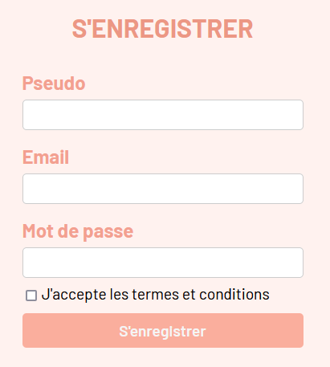
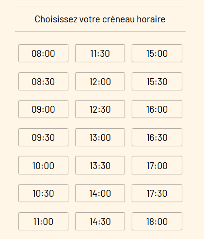
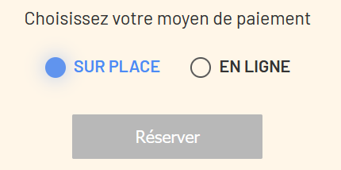

Douceur de lune
Pourquoi ce projet ?

Qui ? Quand ? Comment ?

Technologies et langages utilisées


Architecture de l'Application MVC

- Modèle (Model)
- Vue (View)
- Contrôleur (Controller)
Modèle conceptuel de donnée MCD

Modèle logique de donnée MLD

Fonctionnalités Clés
Un système d'inscription et de connexion
 
Fonctionnalités Clés
La possibilité de supprimer ou modifier son profil
Fonctionnalités Clés
Calendrier partie jours/mois
Fonctionnalités Clés
Calendrier partie horaires

Fonctionnalités Clés
Calendrier partie methode de payement

Fonctionnalités Clés
Un système de reservation
Fonctionnalités Clés
La possibilité de payer via Stripe

Fonctionnalités Clés
Une interface admin
Dashboard EasyAdmin

Démo
Utilisation en situation réel.
Sécurité
RGPD et failles
- Failles XSS
- Failles CSRF
- Failles par force brute / dictionnaire
SEO
- Balise META
- Balise H1/alt
- Responsive

Améliorations Futures
Parler des améliorations ou des fonctionnalités que je prévoie d'ajouter.
- Court terme : Paypal ? Captcha ?
- Moyen terme : Boutique en ligne ?
- Long terme : Messagerie ?
Conclusion
Résumer des points clés de la présentation + remerciements